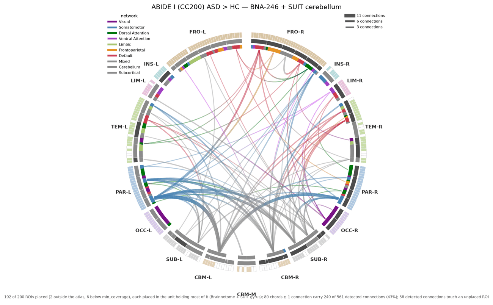
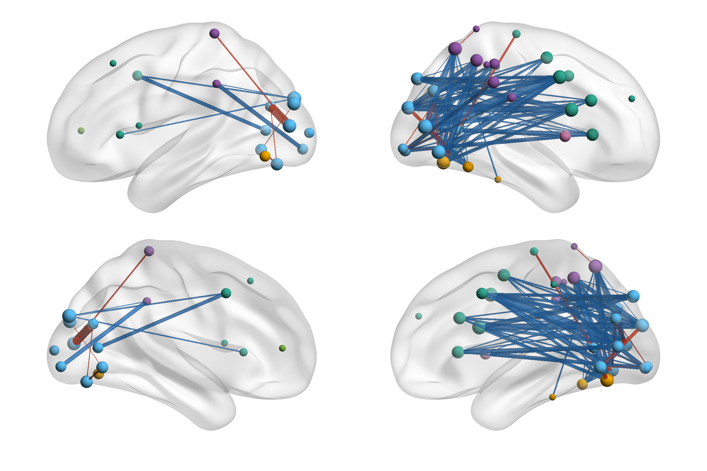
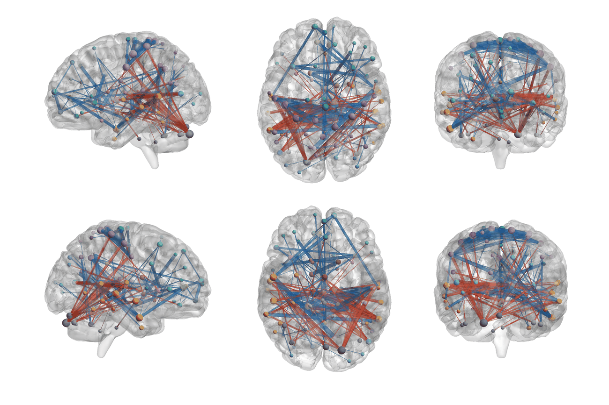

Recommended Workflows
This page describes the recommended end-to-end recipes for the most common connectivity-inference designs. Where the Usage page is a function-by-function reference, this page is task-oriented: pick the row in the decision table that matches your study, then copy the recipe.
Tip
For the conceptual background to these recipes — the per-edge statistic, network enhancement, the permutation null, and family-wise error control — see How Inference Works. Each recipe below is a particular configuration of that common four-step pipeline.
The recommended entry point is conninfpy.analyze(). It wraps the
standard pipeline —
Fisher r→z → optional ComBat → optional site-stratified permutation
→ network enhancement → permutation-corrected p-value maps
— in a single call, and dispatches to the appropriate lower-level pipeline
based on the arguments supplied. The lower-level entry points
conninfpy.compute_p_val(), conninfpy.compute_p_val_glm(), and
conninfpy.compute_p_val_paired_glm() are needed only when full control
over the design matrix or contrast is required.
Selecting a workflow
Study design |
|
Section |
|---|---|---|
Two independent groups (patients vs controls) |
|
|
Continuous predictor + nuisance covariates |
|
|
Several predictors, tested separately, one pass |
|
|
Multi-site continuous / group predictor |
|
|
Paired / repeated conditions (no condition confounds) |
|
|
Paired / repeated conditions + condition-varying confound |
|
|
Between-subject predictor on a within-subject change (Group × Condition) |
|
Between-subject predictor on a within-subject change (Group × Condition) |
Interaction between predictors (e.g. group × age) |
|
|
Custom contrast or multi-row omnibus F-test |
drop to |
|
Three or more repeated sessions (within-subject omnibus F) |
drop to |
All paths share the same output contract: a dict-like
InferenceResult with canonical keys 'positive' and
'negative' (or 'omnibus' for F-tests). Positive and negative effects
are always tested separately. For directional designs the orientation is
fixed:
two-sample / paired:
positive=group2 > group1;GLM:
positive= predictor ↑ → connectivity ↑.
Input conventions
Connectivity tensors are shape
(n_subjects, N, N). The diagonal is zeroed automatically (on a copy) by every entry point.analyze()takesinput='r'for raw correlation matrices (Fisher r→z is applied once) orinput='z'for data already on the z-scale. Left asNoneit detects the scale from a unit diagonal or values beyond ±1, and raises when the data could be either;r_to_z=Falsekeeps correlations untransformed. The lower-level functions inconninfpy.statsnever transform — callconninfpy.fisher_r_to_z()first.Predictors, confounds, and
sitesmust be row-aligned to the subject axis of the connectivity tensor.
Two independent groups
The simplest design — two groups of subjects, no covariates.
from conninfpy import analyze
out = analyze(
group1=controls_corr, # (n1, N, N) raw correlations
group2=patients_corr, # (n2, N, N)
test_type='two-sample',
method='tfnbs',
e=0.4, h=3.0, n=None, # exact integration (the default)
n_permutations=1000,
acceleration=None, # empirical permutation p-values (the default)
rng=42,
)
p_patients_higher = out.inference['positive'] # patients > controls
p_controls_higher = out.inference['negative'] # controls > patients
print(out.inference.n_significant(alpha=0.05))
Note
n is the TFNBS integration setting. n=None (the default) integrates
the piecewise support exactly, independently for each tail. An explicit
positive integer such as n=10 selects the legacy right-endpoint
threshold grid (levels start_thres + i * (max - start_thres) / n), kept
only to reproduce historical grid-based results; legacy grid scores and the
exact integral need not be equal, so record E, H, n and
start_thres explicitly when reproducing such results. Every recipe on
this page uses the exact integral.
Note
compute_p_val(test_type='two-sample') uses Welch’s (unequal
variance) t-statistic by default and Student’s (pooled variance) with
var_equal=True; analyze() takes the same var_equal. The
permutation is the same group-label shuffle for both. Under unequal
variances combined with unbalanced group sizes the exchangeability
assumption behind the permutation null weakens and Type-I error can
inflate (Anderson & Robinson 2001), whichever statistic is used. Treat such
results with caution; for publication-grade multi-site work prefer the
GLM recipe below with a binary interest indicator.
Continuous predictor with confounds
Question: does connectivity vary with age after controlling for sex and
head motion? This is the GLM path (Freedman–Lane permutation), triggered by
passing Y= and interest=.
import numpy as np
from conninfpy import analyze
confounds = np.column_stack([sex, mean_fd])
out = analyze(
Y, # (n, N, N) raw correlations
interest=age, # continuous predictor
confounds=confounds, # nuisance regressors
method='tfnbs',
e=0.4, h=3.0, n=None,
rng=42,
)
p_age_pos = out.inference['positive'] # older → higher connectivity
p_age_neg = out.inference['negative'] # older → lower connectivity
A binary 0/1 interest column turns this into a confound-adjusted group
comparison — the preferred form of the two-sample test when covariates or
multiple sites are involved.
A single array interest tests one effect and returns one result. To
test several predictors at once, pass a dict — see
Several predictors in one pass.
Several predictors in one pass
To test several predictors separately in one design — e.g. age,
sex, and mean_fd each as an effect of interest while the others are
controlled — pass interest as a dict {name: vector}. analyze()
builds one design matrix, tests each predictor against its own Freedman–Lane
null with permutations shared across predictors
(conninfpy.compute_p_val_glm_multi()), and returns a dict mapping
each name to its own InferenceResult. Each result equals a
separate single-predictor run with the same seed; the cost still grows with
the number of predictors. Each predictor is its own correction family: picking
the most significant one afterwards needs an extra correction.
from conninfpy import analyze
out = analyze(
Y,
interest={'age': age, 'sex': sex, 'mean_fd': mean_fd},
confounds=motion, # extra nuisance, shared by all predictors
sites=site, # ComBat + site-stratified permutation
harmonize='combat_site_dummies_glm',
method='tfnbs', e=0.4, h=3.0, n=None,
n_permutations=5000, acceleration=None, rng=42,
)
out['age'].inference['positive'] # edges where age ↑ → connectivity ↑
out['sex'].inference.n_significant(0.05)
out['mean_fd'].significant_edges(atlas) # AnalyzeResult per predictor
Notes:
Each predictor is tested adjusting for the intercept, every
confoundscolumn, and the other interest predictors (they all sit in the shared design). The shared ComBat diagnostics and warning flags are attached to every entry of the returned dict.Each dict value is a single 1-D regressor of shape
(n_subjects,); the key names that predictor’s result. An empty dict, or a value that is not 1-D, raises.Under the ComBat arms (
combat_onlyandcombat_site_dummies_glm), ComBat preserves onlyconfoundsand excludes all tested predictors — the same label-leak avoidance as the single-predictor case.The
(E, H)grid sweep (Inference stability: sweep (E, H) in one call) composes: pass sequences fore/hand every predictor’s result carries the parameter axis.This path is for separate per-predictor tests. For a joint (omnibus) test of several predictors, use a multi-row F-contrast instead (Custom contrasts and omnibus F-tests).
Multi-site GLM with ComBat harmonization
The recommended pattern for most real fMRI analyses: a scientific predictor,
subject-level confounds, and multi-site data. Adding sites= engages two
coupled mechanisms — ComBat batch harmonization, and site-stratified
permutation (PALM -eb semantics, auto-set via strata=sites).
import numpy as np
from conninfpy import analyze
confounds = np.column_stack([age, sex, mean_fd])
out_primary = analyze(
Y,
interest=diagnosis, # 0 = control, 1 = patient
confounds=confounds,
sites=site, # per-subject scanner / site label
harmonize='combat_site_dummies_glm', # primary paper recipe
method='tfnbs',
e=0.4, h=3.0, n=None,
n_permutations=5000,
acceleration=None, # empirical permutation p-values for a reported result
rng=42,
)
print(out_primary.inference)
print(out_primary.flags) # plain-English provenance warnings
print(out_primary.combat_diagnostics) # includes 'strategy': 'combat_site_dummies_glm'
What the call does, step by step:
ComBat fits with
preserve = confounds(age, sex, motion). The tested variable — diagnosis — is deliberately excluded so the harmonization fit does not incorporate the labels the permutation will reshuffle (Nygaard 2016 label-leak avoidance).The downstream GLM tests diagnosis with
age + sex + mean_fd + site_dummiesas nuisance. Site dummies absorb any additive shifts ComBat did not fully remove.sites=siteauto-setsstrata=site, so the permutation respects site exchangeability blocks.
Choosing a harmonization strategy
analyze() ships the three multi-site strategies used in the paper:
ComBat-only, ComBat plus site dummies in the GLM, and site dummies in the GLM
without ComBat. For paper-grade work, report the primary
combat_site_dummies_glm result with combat_only and/or site_dummies_glm as
sensitivity arms, depending on the question.
|
Strategy |
What ComBat does |
GLM nuisance design |
When to use |
|---|---|---|---|---|
|
ComBat only |
Fits with |
|
Isolates what the ComBat transform contributes, without residual site fixed effects in the inferential GLM. |
|
ComBat + site GLM |
Fits with |
|
Primary recipe. Removes the Nygaard 2016 label leak and keeps residual
site control in the inferential GLM. Requires |
|
Site GLM |
Skipped |
|
No-ComBat sensitivity arm; useful when the inference result is the only deliverable or ComBat assumptions are questionable. |
|
dispatcher |
|
(whichever selected strategy uses) |
When the call shape unambiguously implies the recipe. Prefer explicit strategy names in paper scripts. |
# Primary + sensitivity arms.
common = dict(Y=Y, interest=diagnosis, confounds=confounds, sites=site,
method='tfnbs', e=0.4, h=3.0, n=None, rng=42)
out_combat = analyze(**common, harmonize='combat_only')
out_primary = analyze(**common, harmonize='combat_site_dummies_glm')
out_site = analyze(**common, harmonize='site_dummies_glm')
Note
Two-sample mode + ``sites=`` has no defensible ComBat recipe (there is
no interest column to preserve). analyze() skips ComBat and emits a
flag recommending promotion of the analysis to a GLM with a binary
interest indicator, which is the appropriate form for any multi-site
group comparison.
Paired / repeated conditions
Question: does connectivity change between condition A and condition B in
the same subjects? Pass both conditions as group1 / group2 (row
aligned: group1[s] and group2[s] are the same subject) with
test_type='paired'. With no condition-varying confounds this uses the
sign-flip permutation null on the per-subject differences B − A (Fisher
z of each condition first for input='r'). It is exact under its premise —
the joint law of all subjects’ difference matrices is invariant under any
pattern of per-subject sign flips, which independent subjects with centrally
symmetric difference matrices give; unequal variances of A and B do not by
themselves break it (see How Inference Works) — and exactness and Type-I control
are not guaranteed without that premise. The engine samples sign patterns
(Monte Carlo form); the hypothesis is about the mean difference, at the
edge unit for tstat and the TFNBS family. A between-subject predictor of
the change (Group × Condition) is a different design:
Between-subject predictor on a within-subject change (Group × Condition).
from conninfpy import analyze
out = analyze(
group1=rest_corr, # condition A, (n, N, N)
group2=task_corr, # condition B, same subjects
test_type='paired',
method='tfnbs',
e=0.4, h=3.0, n=None,
rng=42,
)
p_task_higher = out.inference['positive'] # task > rest
p_rest_higher = out.inference['negative'] # rest > task
Repeated-measures GLM (condition-varying confounds)
When a confound differs between the two conditions for the same subject
(e.g. condition-level head motion, arousal, or reaction time), pass it
through confounds_group1 / confounds_group2. analyze() then
routes to the paired-difference GLM: it forms
\(\Delta_Y = \mathrm{group2} - \mathrm{group1}\) and the per-subject
confound difference, and tests the difference intercept with Freedman–Lane
permutation (via conninfpy.compute_p_val_paired_glm()).
from conninfpy import analyze
out = analyze(
group1=rest_corr, # condition A, (n, N, N)
group2=task_corr, # condition B, same subjects
test_type='paired',
confounds_group1=fd_rest, # motion during condition A
confounds_group2=fd_task, # motion during condition B
method='tfnbs',
e=0.4, h=3.0, n=None,
n_permutations=1000,
acceleration=None,
rng=42,
)
p_task_higher = out.inference['positive'] # task > rest, motion-adjusted
p_rest_higher = out.inference['negative']
Notes:
Orientation is identical to the no-confound paired path:
positive = group2 > group1. (Internally the conditions are passed swapped so the tested intercept ofΔ = group2 − group1keeps that sign.)Pass both
confounds_group1andconfounds_group2or neither. They are only valid withtest_type='paired'. Useconfounds=(no suffix) only for the between-subject GLM path; passing it alongsidegroup1/group2raises.Subject-constant nuisances cancel in the within-subject difference and do not need to be supplied — including additive site effects. So
sites=with a paired design skips ComBat (it is unnecessary) while still stratifying the permutation;analyze()notes this inout.flags.Power caveat. The paired GLM tests the difference intercept. When a single edge carries a very strong effect it dominates the max-statistic FWER null, and the GLM path is then less powerful than the no-confound sign-flip path. This is inherent to the intercept permutation test, not to the
analyze()implementation. When no condition-varying confounds are present, the plain paired path (Paired / repeated conditions) is preferable.
Between-subject predictor on a within-subject change (Group × Condition)
Question: does the change between two conditions depend on a between-subject
variable — patient group, age, genotype? This is the Group × Condition
term of a mixed design, estimated as a between-subject predictor of the
within-subject difference. Pass both conditions as group1 / group2
with test_type='paired' and a named interest predictor;
analyze() then routes to the paired-interest path.
from conninfpy import analyze
out = analyze(
group1=rest_corr, # condition A, (n, N, N) raw correlations
group2=task_corr, # condition B, same subject order as A
test_type='paired',
interest=group_code, # 0/1 (or numeric) between-subject variable
confounds=age, # optional subject-level covariates, constant per subject
method='tfnbs', # n=None: exact integration
n_permutations=1000, acceleration=None, rng=42,
)
out.inference['positive'] # positive coefficient of group on B − A: a larger change where group = 1
out.inference['negative'] # negative coefficient of group on B − A
Several predictors go in a dict (interest={'group': ..., 'age': ...}),
and the result is then a dict keyed by name, as in Several predictors in one pass.
What the call does:
Each condition is transformed to Fisher z separately (
input='r'); the response is the per-subject differenceΔ = B − Ain Fisher-z units and theinterestpredictors are regressed onΔacross subjects with a Freedman–Lane permutation at the subject level (the design diagnostics recordunit_of_observation = 'subject_pair_difference'). The effect map is the native contrast estimate on that scale. This is the GLM route, not the sign-flip test of Paired / repeated conditions: its p-values are approximate in the Freedman–Lane sense.Sign of the maps.
positiveholds the p-values of edges where the predictor’s coefficient onΔ = B − Ais positive (predictor ↑ → larger change),negativewhere it is negative; this is the sign of the contrast, not ofB − Aitself. The condition main effect — whetherB − Adiffers from zero on average — is Paired / repeated conditions; a group main effect present identically in both conditions cancels inΔand is not tested here.What cancels. An additive effect that is identical in both conditions disappears in
Δ; a covariate can still be associated withB − Aand then belongs in the subject-levelconfounds.sites=skips ComBat and only stratifies the permutation. Condition-varying confounds go inconfounds_group1/confounds_group2and enter as B − A, alongside subject-levelconfounds.Pairing by ID. With
ids_group1/ids_group2the conditions are matched by subject ID and reordered once, before the transform and the difference (as in Repeated-measures GLM (condition-varying confounds)); without IDs the rows must already be aligned.r_to_z=Falseis rejected on this path (the difference of correlations is not the scale the model is written for), and so is anyharmonize=other than'auto'/None: condition differences are not harmonized automatically.
The same path accepts several named predictors and interactions=
(Interactions between predictors), e.g. a group × age term on the difference. The CLI
form is design: type: paired with interest, interactions and
subject_confounds (Usage, “Paired condition differences and
interactions”).
Interactions between predictors
Question: does the age effect on connectivity differ between patients and
controls? Pass the predictors as a dict and name the product terms with
interactions=:
from conninfpy import analyze
out = analyze(
Y,
interest={'group': group_code, 'age': age}, # numeric; encode categories as 0/1 yourself
interactions=[('group', 'age')],
confounds=motion,
method='tfnbs', n_permutations=1000, acceleration=None, rng=42,
)
out['group:age'].inference['positive'] # product term, adjusted for both main effects
out['age'].inference # age effect adjusted for group and the product
Rules:
Every named predictor is mean-centred by its sample mean; an interaction is the product of the centred columns, keyed
"a:b"in the returned dict. Each effect — main effects and products alike — is tested with all other columns, including the other main effects, as nuisance, against its own Freedman–Lane null with the permutations shared across effects; each effect is its own correction family, as in Several predictors in one pass.Predictors must be finite 1-D numeric vectors; categories are encoded explicitly (e.g. 0/1). Through the CLI, text predictors must have exactly two levels, the sorted first level being the reference.
The path composes with
sites=/harmonize=(ComBat preserves onlyconfoundsand excludes every tested column) and with the(E, H)sweep. On the paired-interest path (Between-subject predictor on a within-subject change (Group × Condition)) the response is the within-subject difference and the product terms are between-subject predictors of it.
Custom contrasts and omnibus F-tests
For a custom contrast matrix, custom categorical coding, or a joint (omnibus)
test, build the design matrix and contrast explicitly and call
conninfpy.compute_p_val_glm() directly — see the
Usage page for the advanced API, including stat_type='fstat' for
multi-row contrasts (≥3-condition designs or jointly testing several
predictors), which returns a single 'omnibus' p-map. Interactions between
named predictors do not need this: see Interactions between predictors.
Three or more repeated sessions (within-subject omnibus F)
Question: does connectivity differ between any of three or more sessions, tested jointly and averaged over subjects, when every subject contributes the same set of sessions?
analyze() has no path for three or more sessions; call
conninfpy.compute_p_val_glm() with a hand-built design. The only
verified recipe (design D1) is one balanced, complete within-subject
session factor with k >= 3 sessions and n >= 2 subjects, stacked
subject-major: row r = s*k + j holds subject s, session j, so
Y has shape (n*k, N, N) on the Fisher-z scale, symmetric with a zero
diagonal. Everything else in this section is explicitly not covered.
import numpy as np
from conninfpy import compute_p_val_glm
k = 3 # sessions per subject (k >= 3)
n = Y.shape[0] // k # subjects, from the stacked rows
subj = np.repeat(np.arange(n), k) # subject code per stacked row
sess = np.tile(np.arange(k), n) # session index per stacked row
S = np.eye(n)[subj] # subject dummies
T = np.column_stack( # session j vs 0
[(sess == j).astype(float) for j in range(1, k)]
)
X = np.column_stack([S, T]) # full design, rank n + k - 1
C = np.column_stack( # jointly test the k-1 session columns
[np.zeros((k - 1, n)), np.eye(k - 1)]
)
out = compute_p_val_glm(
Y, # (n*k, N, N), Fisher-z, balanced complete
design_matrix=X,
contrast=C,
stat_type='fstat', # single 'omnibus' p-map
method='tstat',
n_permutations=2000,
acceleration=None, # keep the empirical p (no GPD/gamma)
strata=subj, # permute within subject blocks only
missing='raise', # balanced complete data required
use_mp=False, # serial route, as verified; copy-paste safe
rng=42,
)
p_omnibus = out['omnibus'] # (N, N), joint session-effect p-values
Estimand and degrees of freedom. C = [0 | I_{k-1}] tests the joint
equality of the session means, i.e. all differences μ_j − μ_0 averaged
over subjects; because the design is balanced the subject effects cancel.
Numerator df is k-1, residual df is (n-1)(k-1). Subject fixed
effects must be in both the full and the reduced model: the reduced
design X null(C) is exactly the span of the subject dummies, so its
projector is the within-subject averaging operator and the reduced
residuals sum to zero within each subject.
Permutation assumptions. strata carries the subject code per row
(length n*k); the residuals are permuted within each subject block
only, never as whole blocks, so there is no between-subject exchange
anywhere in the engine. scheme='auto' resolves to 'permutation'
here because the reduced model spans the constant; sign flipping is not the
scheme of this design.
The premise is invariance of the joint distribution of the entire error
array — all subjects and all edges — under the product of independent
within-subject session permutations: each permuted row moves its whole
edge vector together, and the subject blocks are permuted independently.
A sufficient case is independent subjects whose session-indexed edge
vectors are exchangeable within each subject (for example, i.i.d. across
sessions within each independent subject); the laws of different subjects
may differ. Exchangeability of a single edge within a subject, taken
separately, is not enough for the max-F null across edges: with a common
session shock shared by all subjects (one edge’s error U_j + V_sj,
U_j common across subjects), every subject’s errors are i.i.d. across
sessions, yet permuting one subject’s sessions changes which subjects
share U_j and changes the joint law. Compound symmetry of the
covariance is a second-moment property only and is not sufficient
without further distributional assumptions.
Null reference: enumeration vs sampling. In this design the
Freedman–Lane reconstruction is mathematically the within-block row
permutation of the data itself: the reduced fit is the within-subject
mean, constant inside each block, so Y* = H0 Y + P (I - H0) Y = P Y
in exact arithmetic. Under the joint-invariance premise, exhaustive
enumeration of the (k!)^n within-block assignments is a finite-sample
randomization test for the joint null; discreteness and included ties
keep its level conservative. The number of assignments is (k!)^n;
the number of distinct null values can be smaller — a session relabelling
applied to every subject at once leaves every omnibus F unchanged, so
k! assignments tie with the observed statistic in exact arithmetic
for any data. The API does not enumerate: it samples B assignments
with replacement and reports p = (count + 1) / (B + 1), count the
number of sampled null max-F values at least as large as the observed
edge F (ties included); the +1 rule belongs to Monte Carlo sampling,
while the exhaustive-enumeration reference is count / (k!)^n.
The equivalence Y* = P Y is specific to D1’s reduced design; in
general, Freedman–Lane is approximate. The floating-point implementation
reconstructs Yhat0 + R0[perm] instead of permuting rows of Y, so
machine values can differ from the exact row permutation by rounding.
Near-tie sensitivity. The count rule null >= observed is
discontinuous at equality. Besides the structural k! ties above,
data-dependent near-ties occur, and two algebraically equivalent F
formulas (nested RSS differences vs the engine’s quadratic form over
sigma2) differ by ~1e-14 in floating point, enough to land on opposite
sides of a tie and move a count by one per affected draw. There is no
universal bound on the resulting p difference; it depends on the design
and the data. The regression test therefore checks the permutation
mechanism with the engine’s own operation order (exact count/p equality)
and the independent algebra with a tolerance.
Not covered by this recipe (use another path, or do not report under this heading):
Pairwise or single-session t contrasts on the stacked design. They are outside the verified recipe — the reduced-model nuisance can break null invariance. A separately pre-specified two-condition A/B comparison stays the NETSTAT-16/31 contract: without condition-varying confounds use
analyze(..., test_type='paired')(Paired / repeated conditions); with condition-varying confounds useconninfpy.compute_p_val_paired_glm()(Repeated-measures GLM (condition-varying confounds)).Between-subject effects (e.g. a group variable) on stacked repeated rows. Within-block permutation never exchanges subjects, and the subject dummies absorb any between-subject factor.
Group × session interaction on the stack — not verified here.
Longitudinal designs with temporally autocorrelated or otherwise structured within-subject errors.
Mixed / random-effects / random-slope models.
strata=subjectis not a multilevel promise.Unbalanced designs and missing sessions.
missing='available_case'is not verified for D1; the recipe requires balanced complete data (missing='raise', the default).
The recipe is documented for the design above only: it makes no claim of FWER or power calibration, of validity outside the exchangeability premise, or of post-hoc inference.
Inference stability: sweep (E, H) in one call
The TFNBS-family enhancement ('tfnbs', 'ni_tfnbs', 'fbc_tfnbs')
depends on two exponents — the extent exponent E and the height exponent
H. Published defaults disagree (Hao 2024 E=0.4, H=3.0; Smith–Nichols
2009 E=0.5, H=2.0; Baggio 2018 E=0.75, H=3.0), and Vinokur 2023
reports up to 75-fold variation in edge counts across the (E, H) plane.
A single (E, H) result is therefore of limited value on its own; a finding
should be shown to be stable across the plausible parameter range.
Pass equal-length sequences for e and h to evaluate the grid in
one permutation pass. Exact integration evaluates each pair, so runtime
increases with the number of pairs. The grid allows a stability assessment
without running separate permutation pipelines.
from conninfpy import analyze
# Three published-default (E, H) cells, zipped pairwise (not a cross
# product): (0.4, 3.0), (0.5, 2.0), (0.75, 3.0).
e_grid = [0.4, 0.5, 0.75] # Hao, Smith–Nichols, Baggio
h_grid = [3.0, 2.0, 3.0]
out = analyze(
Y, interest=diagnosis, confounds=confounds, sites=site,
harmonize='combat_site_dummies_glm',
method='tfnbs', e=e_grid, h=h_grid, n=None,
n_permutations=5000, acceleration=None, rng=42,
)
r = out.inference
r.is_grid # True
r.positive.shape # (N, N, 3) — one p-map per (E, H) cell
r.e_grid # array([0.4, 0.5, 0.75])
r.h_grid # array([3.0, 2.0, 3.0])
r.n_significant(0.05) # per-cell counts:
# {'positive': [k0, k1, k2], 'negative': [...]}
When the returned object is a grid (is_grid == True), the (N, N)
exporters require a cell to project to. Pass param_idx= (or call
.select() first); omitting it on a grid raises an explicit error rather
than selecting a cell implicitly:
sub = r.select(0) # fresh 2D result for cell 0
df = r.significant_edges(atlas, param_idx=2) # export cell 2 directly
r.to_csv('edges_hao.csv', atlas=atlas, param_idx=0)
Use it to confirm a result is stable across the published-default cells
before reporting, or to run a denser sensitivity grid (e.g. a 6 × 6 sweep) at
the cost of a single inference call. The same e / h sequence syntax
works on every TFNBS-family path — two-sample, GLM, and the repeated-measures
GLM alike.
Interpreting and exporting results
Every result is dict-like and carries metadata and exporters:
r = out.inference
r.method, r.n_permutations, r.acceleration, r.harmonized
r.n_significant(alpha=0.05) # {'positive': k, 'negative': k}
r.stat_signed # signed t / β effect map
# ROI-aware edge table (needs an atlas)
from conninfpy import AtlasInfo
atlas = AtlasInfo.schaefer_200_yeo7()
df = out.significant_edges(atlas, sort='network_pair', top_k=50)
out.to_csv('edges.csv', atlas=atlas)
# NBS (method='nbs'): the inference unit is the component, not the edge.
# One row per observed component of each tail, with its component-level
# p-value (max-statistic FWER over components, under the scheme's validity);
# `component_id` also labels the rows of significant_edges() and the CSV.
comps = out.component_table(atlas) # tail, component_id, n_edges, n_nodes,
# statistic, p_fwer, significant, ROI names,
# networks, network_pairs
out.component_report["threshold"] # the dict behind the table (None for other methods)
# Which ROIs gather the detections (descriptive; one row per ROI)
nodes = out.node_summary(atlas) # edge-wise methods: n_sig_<tail>, n_tested, prop_sig,
# mean_effect_<tail> (c'beta), partner_networks, participation.
# nbs / cnbs: significant components / blocks containing the
# ROI and its edges in them (no p-value mass). The unit is
# out.inference.inference_unit.
# One-call publication figure
from conninfpy.plot import summary_figure
fig = summary_figure(out.inference, atlas=atlas, alpha=0.05, top_k=10)
fig.savefig('summary.pdf', bbox_inches='tight')
# Brainnetome anatomy of the detected connections (descriptive)
from conninfpy.interpret import annotate_rois, interpret_result
rois = annotate_rois(support='parcel', parcel_image=schaefer_200_img,
parcel_labels=list(range(1, 201)), networks=atlas.networks,
space='MNI152NLin2009cAsym') # the template the signals were extracted in
report = interpret_result(out.inference, rois, name='contrast', source_atlas='Schaefer-200')
report.save('results/contrast') # tables, evidence.json, connectograms
The Brainnetome report describes where the detected connections lie (endpoint
subregion, gyrus and lobe; hemispheric relation, circuit class, distance;
BrainMap domains of the endpoints) next to what was tested. It adds no test:
the p-values, their correction and the inference unit are unchanged. The
connectograms place only ROIs with atlas support: unassigned ROIs
(outside the atlas or below min_coverage) get no tissue on the rings, and
each footer reports the placement counts and the detected connections that
touch an unplaced ROI (aggregate_connections(...).attrs["coverage"]).
For data parcellated with the Brainnetome atlas itself use
annotate_bna_regions.
See Anatomical interpretation — conninfpy.interpret for the rules, and the ABIDE and Open-Close
examples (examples/abide/, examples/open_close/) for complete runs.

from conninfpy.atlas.brainnetome import BrainnetomeReference
from conninfpy.interpret import annotate_rois
from conninfpy.plot import plot_connectogram
ref = BrainnetomeReference.load(resolution_mm=1, cerebellum='anatom')
rois = annotate_rois(coords, reference=ref, names=names,
support='sphere', radius_mm=6, space='MNI152NLin2009cAsym')
plot_connectogram(out.inference, rois, tail='positive', level='gyrus', max_links=80)
BrainNet Viewer export and headless rendering
Results with 3D MNI coordinates can be exported to BrainNet Viewer .node
and .edge files together with a .scene.json scene manifest
(compatible with BrainNet Viewer Python 2.0.0):
from conninfpy.reporting import export_brainnet, render_brainnet
paths = export_brainnet(out.inference, atlas, 'results/brainnet', alpha=0.05, write_scene=True)
# Optional headless PNG rendering if brainnet-render is installed in a separate environment:
png = render_brainnet(paths['scene'], 'results/brainnet.png')
From the CLI, conninfpy interpret --cerebellum anatom --export-brainnet writes .node,
.edge, and .scene.json; adding --brainnet-render (and optionally
--brainnet-bin <path>) invokes brainnet-render when available and warns
without failing if the renderer is not installed.


Top: Open-Close IHB EC vs EO on ICBM152 (4-view). Bottom: ABIDE I CC200 ASD vs HC on BrainMesh_Ch2withCerebellum (6-view). Nodes are colored by BNA-246 anatomical lobes (Frontal, Insular, Limbic, Temporal, Parietal, Occipital, Subcortical, Cerebellum); edges are colored by effect sign (warm = positive, cool = negative) for the top 150 significant edges by |t|.
Speed vs. publication runs
Every entry point defaults to n_permutations=1000 with empirical
permutation p-values (acceleration=None). For fast exploration opt into GPD tail
acceleration; for a final result use a larger empirical reference:
# Exploration: few permutations with the opt-in GPD tail replacement.
# Model-based tail estimates with known limits (see approach, Acceleration).
analyze(Y, interest=age, confounds=confounds, n_permutations=200,
acceleration='gpd', rng=42)
# Publication (empirical permutation reference with many permutations)
analyze(Y, interest=age, confounds=confounds, n_permutations=5000,
acceleration=None, rng=42)
See Usage for the full enhancement-method table and acceleration
internals. The (E, H) stability sweep (Inference stability: sweep (E, H) in one call) and the
several-predictors workflow (Several predictors in one pass, which wraps
conninfpy.compute_p_val_glm_multi()) are covered above.
From fMRIPrep derivatives and on-demand nilearn atlases
conninfpy keeps nilearn optional and does not bundle third-party NIfTI
atlases. Fetch a volumetric parcellation on demand with nilearn, extract
confound-regressed time series with FmriprepDerivativesLoader,
and annotate detected edges using support='parcel':
from nilearn import datasets
from conninfpy import AtlasInfo, analyze, compute_connectivity
from conninfpy.atlas.brainnetome import BrainnetomeReference
from conninfpy.interpret import annotate_rois
from conninfpy.loaders import FmriprepDerivativesLoader
schaefer = datasets.fetch_atlas_schaefer_2018(n_rois=100, yeo_networks=7, resolution_mm=2)
ds = FmriprepDerivativesLoader(
derivatives_dir="/path/to/bids/derivatives/fmriprep",
atlas_image_path=schaefer.maps,
denoising={"strategy": 4, "n_compcor": 10},
).load()
corr = compute_connectivity(ds.data, kind="correlation")
out = analyze(corr, input="r", interest=age, confounds=mean_fd[:, None],
motion_qc={"fd": mean_fd}, method="tfnbs", rng=42)
atlas = AtlasInfo.from_nifti(schaefer.maps)
ref = BrainnetomeReference.load(profiles=False, resolution_mm=1, cerebellum="anatom")
rois = annotate_rois(coords=atlas.coords, reference=ref, names=atlas.labels,
space="MNI152NLin2009cAsym", support="parcel",
parcel_image=schaefer.maps, parcel_labels=list(atlas.label_ids))
See examples/fmriprep_nilearn/ for the full runnable script
(run_fmriprep_workflow.py), manifest_template.yaml (for Schaefer-100
and Craddock-200), and the matching conninfpy qc → run → interpret
CLI commands.
Custom atlases
conninfpy.AtlasInfo supports four custom atlas constructors so any
parcellation or coordinate set plugs into analyze(),
out.significant_edges(atlas), out.network_summary(atlas), and
annotate_rois().
ROI table (CSV) —
AtlasInfo.from_csv()Required columns:
nameandnetwork. Optional columns:x,y,z(MNI mm),hemisphere, andidorroi_id. Rows must be in matrix node order0..N-1:id,name,network,x,y,z,hemisphere 1,LH_Vis_1,Visual,-18,-86,-4,L 2,RH_Vis_1,Visual,20,-84,-2,R
from conninfpy import AtlasInfo, analyze from conninfpy.interpret import annotate_rois atlas = AtlasInfo.from_csv("my_atlas.csv") out = analyze(group1=ctrl, group2=pat, method="cnbs", atlas=atlas, rng=42) edges = out.significant_edges(atlas) nets = out.network_summary(atlas) rois = annotate_rois(atlas.coords, names=atlas.labels, networks=atlas.networks, support="sphere", radius_mm=6, space="MNI152NLin2009cAsym")
3D integer label volume (NIfTI + optional LUT) —
AtlasInfo.from_nifti()Accepts a 3D integer label NIfTI (
0 = background), reading non-zero ROI IDs in ascending order (matchingnilearn.maskers.NiftiLabelsMasker) and computing ROI centroids automatically. Probabilistic 4D maps are not label masks and are rejected; convert them to 3D integer labels or useAtlasInfo.from_coordinates()/from_csv().atlas = AtlasInfo.from_nifti("my_parcellation_3d.nii.gz", lut="my_lut.csv") out = analyze(group1=ctrl, group2=pat, method="tfnbs", rng=42) edges = out.significant_edges(atlas) nets = out.network_summary(atlas) # uses LUT 'network' column if present rois = annotate_rois(coords=atlas.coords, names=atlas.labels, networks=atlas.networks, support="parcel", parcel_image=atlas.image, parcel_labels=list(atlas.label_ids), space="MNI152NLin2009cAsym")
MNI coordinates —
AtlasInfo.from_coordinates()Assigns an
(N, 3)array of MNI coordinates (mm, in matrix order) to a reference atlas (e.g.AtlasInfo.schaefer_200_yeo7()orAtlasInfo.bna_246()) to populate ROI labels and network memberships:atlas = AtlasInfo.from_coordinates(coords, reference=AtlasInfo.schaefer_200_yeo7()) out = analyze(group1=ctrl, group2=pat, method="cnbs", atlas=atlas, rng=42) nets = out.network_summary(atlas) rois = annotate_rois(atlas.coords, names=atlas.labels, networks=atlas.networks, support="sphere", radius_mm=6, space="MNI152NLin2009cAsym")
Deterministic nilearn atlas —
AtlasInfo.from_nilearn()Wraps deterministic
nilearn.datasets.fetch_atlas_*results (nilearn >= 0.13, which provide aluttable; 4D probabilistic atlases are rejected):from nilearn import datasets ho = datasets.fetch_atlas_harvard_oxford("cort-maxprob-thr25-2mm", symmetric_split=True) atlas = AtlasInfo.from_nilearn(ho) rois = annotate_rois(coords=atlas.coords, names=atlas.labels, support="parcel", parcel_image=atlas.image, parcel_labels=list(atlas.label_ids), space="MNI152NLin2009cAsym")